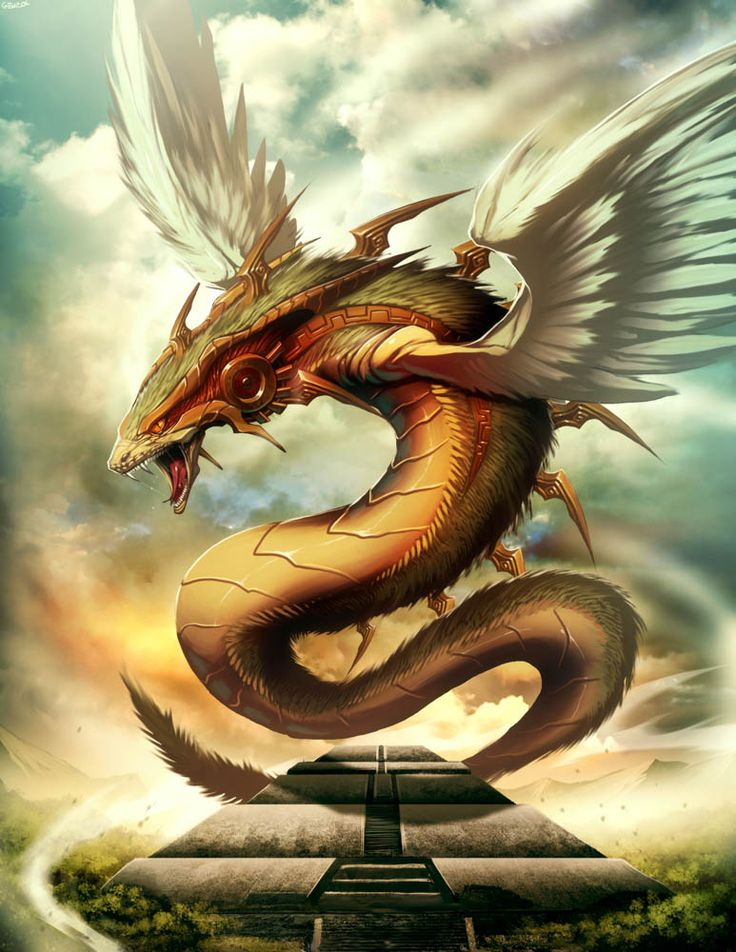

Welcome to Snake Mythology Blog
Snakes, captivating creatures that have slithered their way into the narratives of countless cultures and mythologies throughout history, are the subject of fascination and intrigue. Known for their sleek bodies, forked tongues, and venomous fangs, these enigmatic reptiles have left an indelible mark on human imagination, spawning a plethora of names, myths, and legends that span the globe. From ancient civilizations to modern societies, snakes have been both revered and feared, symbolizing everything from creation and rebirth to deception and evil. Despite their diverse cultural associations, snakes also share common characteristics that have fostered cross-cultural connections, highlighting the universal fascination with these creatures.
In mythology, snakes have played prominent roles across different cultures. In ancient Greek mythology, for example, the snake-like creature known as the Hydra was a formidable adversary, with its regenerative powers and multiple heads making it a symbol of resilience and danger. In Norse mythology, the world serpent Jormungandr encircled the entire earth, signifying chaos and the impending doom of Ragnarok. Likewise, in Hindu mythology, the snake deity Shesha, depicted as a massive serpent with multiple heads, served as the bed for Lord Vishnu, representing cosmic balance and protection.
The symbolism of snakes extends beyond mythology, permeating various cultural beliefs and practices. In many indigenous cultures, snakes are revered as sacred beings associated with healing, wisdom, and spiritual transformation. For example, the ancient Mesoamerican civilizations, such as the Aztecs and Mayans, considered the feathered serpent deity Quetzalcoatl to be a benevolent entity responsible for civilization and knowledge.
Snakes have also found their way into religious texts and folklore. In the biblical story of Adam and Eve, the serpent is portrayed as the catalyst for humanity's fall from grace, forever associating snakes with temptation and deceit. In Chinese folklore, the snake is one of the twelve animals of the zodiac, representing intuition, intelligence, and mystery. Moreover, the concept of Kundalini, originating from ancient Indian scriptures, describes a dormant snake-like energy coiled at the base of the spine, symbolizing spiritual awakening and enlightenment.
Despite the diverse narratives surrounding snakes, there are common threads that link these representations across cultures. The serpentine form itself, with its sinuous movement and ability to shed its skin, has often been associated with cycles of transformation, regeneration, and renewal. This universal symbolism reflects the interconnectedness of cultures and their shared understanding of the natural world.
In this blog, we will explore the multifaceted nature of snakes, delving into the rich tapestry of names, myths, and legends that have woven their way into human history. From the ancient serpent deities to the serpents of contemporary folklore, we will unravel the common threads that bind these creatures together while appreciating the unique cultural perspectives that have shaped their significance. Prepare to be captivated by the allure and mystique of these extraordinary beings as we embark on a journey through the fascinating world of snakes.
Snake Deities
.jpeg) In many cultures, snakes have been associated with deities, representing various aspects of power, wisdom, and spirituality. The divine connection with snakes can be traced back to ancient times and continues to influence religious beliefs and practices today.
One prominent example is found in ancient Egyptian mythology, where the cobra played a significant role. The Uraeus, a rearing cobra symbol, adorned the headdresses of Egyptian pharaohs, representing divine authority and protection. The goddess Wadjet, depicted as a cobra or a woman with a cobra's head, was associated with royalty, guardianship, and the protection of the pharaoh.
In many cultures, snakes have been associated with deities, representing various aspects of power, wisdom, and spirituality. The divine connection with snakes can be traced back to ancient times and continues to influence religious beliefs and practices today.
One prominent example is found in ancient Egyptian mythology, where the cobra played a significant role. The Uraeus, a rearing cobra symbol, adorned the headdresses of Egyptian pharaohs, representing divine authority and protection. The goddess Wadjet, depicted as a cobra or a woman with a cobra's head, was associated with royalty, guardianship, and the protection of the pharaoh.
In Hinduism, snakes hold a special place in the pantheon of deities. Lord Shiva, one of the principal gods in Hinduism, is often depicted with a serpent coiled around his neck. This snake, known as Vasuki or Ananta Shesha, represents time, eternity, and cosmic balance. The snake is also associated with Lord Vishnu, another major deity, who is often depicted resting on the serpent's coils. This imagery symbolizes the preservation and sustenance of the universe.
In Greek mythology, the god Apollo was associated with snakes. He was often depicted with a snake coiled around his staff, known as the caduceus, which became a symbol of healing and medicine. Additionally, the ancient Greek god of medicine, Asclepius, was depicted with a staff entwined by a single serpent, which became the universal symbol of medicine, the Rod of Asclepius.
In Mesoamerican civilizations, such as the Aztecs and Mayans, snakes held significant religious importance. Quetzalcoatl, the feathered serpent deity, was one of the most revered gods in their pantheon. Often depicted as a serpent with colorful feathers, Quetzalcoatl represented wisdom, creation, and the planet Venus. The Aztecs believed that Quetzalcoatl was responsible for teaching them agriculture, arts, and civilization.
The association between snakes and deities is not limited to ancient cultures. In some African and Afro-Caribbean religions, such as Voodoo and Santeria, serpents hold sacred status. The deity Damballah, often depicted as a large snake or a serpent with a human face, is considered the creator of all life in Voodoo. Damballah is associated with wisdom, fertility, and rain, and is considered a powerful and benevolent spirit.
These examples demonstrate the diverse ways in which snakes have been intertwined with deities in different cultural and religious contexts. From symbols of protection and divine power to embodiments of wisdom and creation, snakes continue to hold a significant place in the pantheon of gods and goddesses, inspiring awe and reverence among believers..
Serpent Creatures
Serpent creatures are prevalent in mythology, appearing in various forms and playing significant roles across different cultures. These snake-like beings often possess extraordinary abilities, symbolizing both the power of nature and the complexities of human existence. Here are a few notable serpent creatures from mythology:
Hydra (Greek Mythology):
The Hydra was a multi-headed serpent-like creature in Greek mythology. It possessed regenerative powers, with two heads growing back whenever one was severed. It was ultimately slain by the hero Hercules as one of his twelve labors.Jormungandr (Norse Mythology):
In Norse mythology, Jormungandr, also known as the World Serpent, was a colossal sea serpent that encircled the world, biting its own tail. Jormungandr was one of the children of Loki and was foretold to bring about Ragnarok, the apocalyptic battle between the gods and giants.Naga (Hindu and Buddhist Mythology):
In Hindu and Buddhist mythology, the Naga is a divine, serpent-like creature often depicted as half-human, half-serpent or as a giant serpent. Nagas are associated with water, fertility, protection, and wisdom. They are believed to possess supernatural powers and guard sacred places.Quetzalcoatl (Mesoamerican Mythology):
Quetzalcoatl, a prominent deity in Aztec and Mayan mythology, was depicted as a feathered serpent. Considered the god of wind, knowledge, and creation, Quetzalcoatl played a crucial role in the Mesoamerican pantheon and was revered by several ancient civilizations.Leviathan (Abrahamic Mythology):
The Leviathan is a sea serpent mentioned in the Bible and Jewish folklore. It is often described as an enormous creature with fearsome power. In some interpretations, the Leviathan represents chaos and is associated with the sea and primordial forces.Basilisk (European Mythology):
The Basilisk is a mythical serpent creature in European folklore. It is often depicted as a combination of a snake and a rooster, with the ability to kill with its venomous breath or its gaze. The Basilisk is considered one of the deadliest creatures in mythology.These serpent creatures showcase the diverse interpretations and roles of snakes in mythology. Whether representing the forces of destruction, guardians of hidden knowledge, or agents of transformation, they embody the intrigue and awe that snakes have evoked in human imagination throughout history.
Snake Symbolism
Snakes have held symbolic significance in various cultures throughout history and mythology, representing a wide range of concepts and qualities. Here are some common symbolic meanings associated with snakes:
Transformation and Rebirth:
The shedding of a snake's skin has long been seen as a symbol of renewal and transformation. This process of shedding represents the idea of leaving the old behind and embracing new beginnings, making snakes a potent symbol of personal growth and spiritual transformation.Wisdom and Knowledge:
Snakes have often been associated with wisdom and hidden knowledge. In Greek mythology, the god Apollo was depicted with a snake coiled around his staff, symbolizing the acquisition of wisdom and healing. In Hindu mythology, the serpent deity Shesha is known for its infinite knowledge and serves as the bed for Lord Vishnu.Dualistic Nature:
Snakes are often associated with duality and conflicting forces. Their ability to move both on the ground and in trees, as well as their venomous and non-venomous species, represent the balance between opposing forces, such as good and evil or life and death.Healing and Medicine:
The serpent is a symbol of healing and medicine in various cultures. The ancient Greek symbol of the Rod of Asclepius, featuring a serpent entwined around a staff, is still used as a symbol of medicine today. Similarly, in Mesoamerican cultures, the feathered serpent deity Quetzalcoatl was associated with knowledge, medicine, and healing.Divine Protection and Guardianship:
Snakes have also been revered as protectors and guardians in certain cultures. In ancient Egypt, the cobra was associated with royalty and protection, symbolized by the Uraeus, a rearing cobra symbol on the pharaoh's headdress. Nagas in Hindu and Buddhist traditions are believed to guard sacred places and possess protective powers.Sexuality and Fertility:
Due to their phallic shape and connection to shedding and renewal, snakes have been linked to sexuality and fertility. In some cultures, the serpent represents the life force and the power of creation.These symbolic interpretations of snakes highlight the complex and multifaceted nature of their representation in history and mythology. Snakes have captivated human imagination for centuries, inspiring awe, fear, and reverence, while embodying a wide range of symbolic meanings in different cultural contexts.
Snake Legends
Snake legends are prevalent in mythology across various cultures. These legends often depict snakes as powerful and mystical creatures, capable of both great good and great evil. Here are a few examples of snake legends from different mythologies:
Midgard Serpent (Norse Mythology):
In Norse mythology, the Midgard Serpent, also known as Jormungandr, is a giant sea serpent. It is one of the children of the trickster god Loki and is destined to bring about the end of the world, known as Ragnarok. According to the legend, the serpent is so large that it encircles the entire world, grasping its own tail. Its presence signifies impending doom and the ultimate clash between gods and giants.Orochi (Japanese Mythology):
In Japanese mythology, the legend of Orochi tells the story of a fearsome eight-headed serpent. Orochi terrorized the land, demanding human sacrifices until the hero Susanoo intervened. Susanoo eventually slew the serpent, discovering a powerful sword within one of its tails. This legend showcases the heroism and triumph over evil associated with snakes in Japanese mythology.Python (Greek Mythology):
In Greek mythology, Python was a monstrous serpent that guarded the oracle of Delphi. Python was slain by the god Apollo, who established his own oracle at the site. This legend explains the origin of the Pythian Games, which were held in honor of Apollo's victory over Python.Mucalinda (Buddhist Mythology):
In Buddhist mythology, the story of Mucalinda depicts a serpent king protecting the Buddha. When the Buddha was meditating under the Bodhi tree, a severe storm arose. Mucalinda emerged from the earth, coiled around the Buddha, and spread its hood to shield him from the elements. This legend emphasizes the serpentine creature's role as a guardian and protector in Buddhist traditions.Rainbow Serpent (Indigenous Australian Mythology):
The Rainbow Serpent is a significant figure in Indigenous Australian mythology, representing a powerful creator being. The Rainbow Serpent is believed to have shaped the landscape, including rivers and mountains, and controls the cycles of life, fertility, and water. It is often associated with rainbows, which symbolize its presence and power. These snake legends demonstrate the varied roles and symbolism of snakes in mythology, showcasing their significance as guardians, agents of destruction, or symbols of creation and fertility. They reflect the rich cultural diversity and the enduring fascination humans have had with snakes throughout history.Snakes in Creation Myths
Snakes play prominent roles in creation myths across different cultures and mythologies. These myths often attribute the snake with the power of creation, knowledge, or as a key figure in the formation of the world. Here are a few examples of snakes in creation myths:
Ancient Mesopotamia (Enuma Elish):
In Mesopotamian mythology, the Babylonian creation myth known as the Enuma Elish features the god Marduk battling the chaotic sea goddess Tiamat. Tiamat is depicted as a massive serpent or dragon, representing the primordial waters. Marduk ultimately slays Tiamat and uses her body to create the heavens and the earth.Norse Mythology (Yggdrasil):
In Norse mythology, the world tree Yggdrasil holds the cosmos together. It is said to be protected by the dragon Nidhogg, a large serpent that gnaws at the roots of the tree. Nidhogg's actions, while destructive, are vital for the renewal and continuation of the world.Aboriginal Australian Mythology (Rainbow Serpent):
In Indigenous Australian creation myths, the Rainbow Serpent is a powerful and creative force. It is believed to have shaped the land, rivers, and mountains. The Rainbow Serpent represents fertility, life, and the cycle of the seasons.Aztec Mythology (Feathered Serpent):
Quetzalcoatl, the feathered serpent deity in Aztec mythology, is associated with creation, knowledge, and civilization. Quetzalcoatl played a significant role in shaping the world and teaching humanity various arts and sciences.Hindu Mythology (Ananta Shesha):
In Hindu mythology, the serpent Ananta Shesha serves as the bed and protector of Lord Vishnu, one of the principal deities. Ananta Shesha represents eternity, cosmic balance, and the preservation of the universe.These examples highlight the diverse interpretations of snakes in creation myths. From beings associated with chaos and primordial forces to guardians and creators of the world, snakes hold a significant place in the narratives of human origins and the formation of the cosmos.
Snake Gods and Goddesses
Snakes are often associated with gods and goddesses in various mythologies and religions. These serpent deities hold significant roles and attributes within their respective pantheons. Here are a few notable snake gods and goddesses:
Ananta Shesha (Hinduism):
Ananta Shesha, also known as Sheshanaga, is a prominent snake deity in Hindu mythology. As the thousand-headed serpent, Ananta Shesha serves as the bed and protector of Lord Vishnu, one of the supreme deities. Ananta Shesha represents eternity, cosmic balance, and the preservation of the universe.Wadjet (Ancient Egyptian Mythology):
Wadjet, also known as Buto, is an ancient Egyptian goddess often depicted as a cobra or a woman with a cobra's head. She is associated with royalty, guardianship, and protection. Wadjet was considered a fierce defender of the pharaoh and a symbol of divine authority.Quetzalcoatl (Mesoamerican Mythology):
Quetzalcoatl, the feathered serpent deity, is one of the most revered gods in Mesoamerican cultures such as the Aztecs and the Mayans. Representing wisdom, creation, and the planet Venus, Quetzalcoatl is associated with knowledge, arts, and civilization. Quetzalcoatl played a crucial role in the pantheon of these civilizations.Nagaraja and Nagini (Hinduism and Buddhism):
Nagaraja, meaning "king of the serpents," is a powerful serpent deity in Hinduism. Often depicted as a multi-headed serpent, Nagaraja represents protection, fertility, and cosmic balance. In Buddhism, Nagini refers to the female serpent deities, often depicted as cobras, who possess divine qualities and play various roles in Buddhist cosmology.Apep (Ancient Egyptian Mythology):
Apep, also known as Apophis, is a malevolent serpent deity in ancient Egyptian mythology. Apep is associated with chaos and represents the forces of darkness and destruction. The gods, particularly Ra, were believed to battle Apep each night to ensure the continuous cycle of day and night.These snake gods and goddesses demonstrate the diverse roles and symbolism associated with serpents in different mythological traditions. From embodiments of cosmic balance and protection to representations of chaos and primal forces, snake deities hold a significant place in the spiritual beliefs and cultural narratives of various civilizations..
Snake Worship
Snake worship, also known as ophiolatry, refers to the veneration or reverence of snakes as sacred beings or objects of worship. Snake worship has been practiced in various cultures and religions throughout history, often associated with beliefs in their divine qualities, mystical powers, or symbolic significance. Here are a few examples of snake worship:
Ancient Egypt:
Snakes were revered in ancient Egyptian religion. The cobra, represented by the Uraeus, a rearing cobra symbol, was associated with protection and divine authority. Pharaohs wore the Uraeus on their headdresses as a symbol of their royal power and connection to the gods.Hinduism:
Snakes hold a significant place in Hinduism. The serpent deities, such as Ananta Shesha, Vasuki, and Nagas, are worshipped and revered. They are considered guardians, protectors, and possessors of mystical knowledge. Devotees offer prayers and perform rituals at snake temples and shrines.Mesoamerican Civilizations:
Snake worship was prevalent among the ancient Mesoamerican civilizations, including the Aztecs and the Mayans. The feathered serpent deity, Quetzalcoatl, was highly revered. Temples and sacred sites dedicated to snake worship were built, and rituals and ceremonies were conducted to honor and seek blessings from the serpent deity.Voodoo and Afro-Caribbean Religions:
Snakes are revered and worshipped in various African diasporic religions, such as Voodoo and Santeria. In Voodoo, the serpent deity Damballah is considered a powerful and benevolent spirit associated with wisdom, fertility, and rain. Rituals and ceremonies involving snakes are performed to connect with and seek the blessings of these divine beings.Southeast Asia:
Snake worship is also observed in certain cultures of Southeast Asia. In parts of Indonesia and Cambodia, for example, people venerate Nagas (serpent deities) and believe in their protective and benevolent nature. Rituals, offerings, and processions are conducted to honor and seek blessings from these snake deities.It is important to note that snake worship can vary greatly across cultures and may have different rituals, beliefs, and practices associated with it. While snakes are considered sacred in some traditions, they are also regarded with fear or associated with negative connotations in others..
Snakes in Folklore
Snakes play a significant role in folklore and have been featured in numerous stories and legends passed down through generations. These folktales often portray snakes as clever, cunning, and sometimes magical creatures. Here are a few examples of snakes in folklore:
The Lambton Worm (English Folklore):
The Lambton Worm is a legendary creature from County Durham, England. According to the tale, a young man named John Lambton catches a strange creature while fishing. He foolishly throws it into a well, and it grows into a monstrous worm. The Lambton Worm terrorizes the countryside until John, with the help of a wise woman, defeats it in a battle. This folklore tale warns against the consequences of careless actions.
The White Snake (German Folklore):
"The White Snake" is a popular Grimm Brothers' fairy tale. It tells the story of a king who gains the ability to understand animals by eating a magical white snake. The snake helps the king make wise decisions and resolve conflicts. The tale emphasizes the value of wisdom and the importance of respecting and listening to all creatures.The Snake Prince (Indian Folklore):
In various Indian folklore traditions, there are tales of snake princes, where a snake transforms into a human to marry a princess. The prince's true form is discovered, leading to challenges and adventures before the couple can reunite. These stories often explore themes of love, loyalty, and the boundaries between different realms.The Snake and the Farmer (African Folklore):
This African folktale tells the story of a farmer who spares the life of a snake. In return, the snake helps the farmer by guiding him to hidden treasures. The tale emphasizes the importance of kindness and compassion, as well as the rewards that can come from helping others.The Feathered Serpent (Native American Folklore):
Many Native American tribes have folklore surrounding the Feathered Serpent, a powerful and wise mythical creature. In various stories, the Feathered Serpent acts as a teacher and protector, guiding humans and imparting knowledge and wisdom.These examples illustrate the diverse ways in which snakes are featured in folklore around the world. These tales often contain moral lessons, explore human-animal relationships, and highlight the mystical qualities attributed to snakes in traditional storytelling.